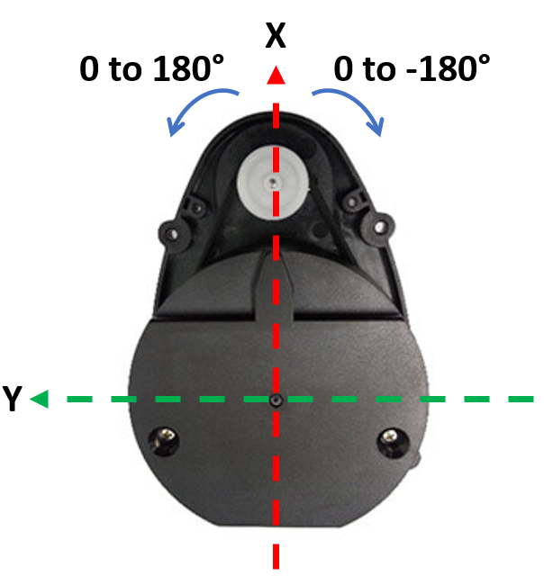
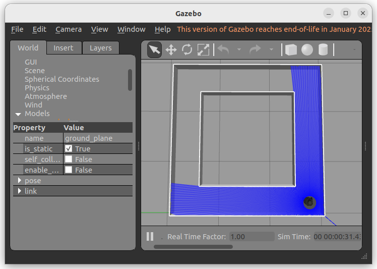
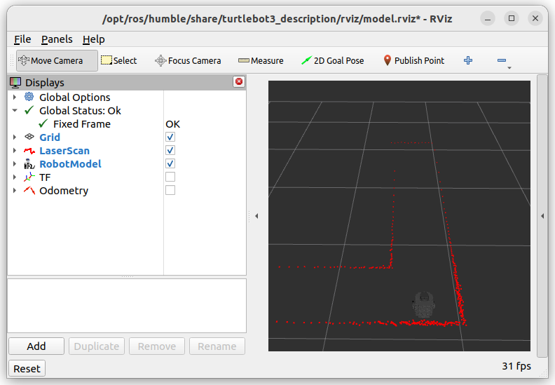

🔬 Lab 8: LiDAR#
📌 Objectives#
Students should be able to implement a ROS2 node to detect walls using LiDAR data.
Students should be able to visualize detected walls in RViz.
Students should be able to test their implementation using Gazebo.
Students should be able to use ROS2 launch files to manage multiple nodes efficiently.
📜 Overview#
In this lab, we’ll enable our robot to detect and follow walls using LiDAR. While various sensors like cameras, sonar, and infrared can detect objects, we’ll focus on LiDAR due to its affordability and effectiveness.
The Robotis LDS-01 LiDAR is a 360-degree Laser Distance Sensor (LDS) that measures distances over 1,800 times per second. It has a range of 0.12m to 3.5m with an angular resolution of 1 degree and an accuracy of \(\pm\)0.015m for close distances, increasing to \(\pm\)5% beyond 0.5m.
{kind=link}
📹 How LiDAR Works#
📹 TurtleBot3 LiDAR Example#
🌱 Pre-Lab: Setting Up and Testing LiDAR#
Before we dive into wall detection, we need to ensure that our setup is working correctly.
Using ROS2 Launch Files#
Managing multiple ROS nodes can become overwhelming, especially as our system grows. Instead of running each node in separate terminals, we’ll use ROS2 launch files to simplify the process.
Navigate to Your Package: Open a terminal and move to the
lab4_gamepadpackage.cd ~/master_ws/src/ece387_ws/lab4_gamepad
Create a Launch Directory: Create a
launchdirectory:Create a Launch File: Inside the
launchdirectory, create a new file namedgamepad.launch.py:Open the File in VS Code: Open the newly created file in your code editor.
Copy and Paste the Following Code:
import launch import launch_ros.actions def generate_launch_description(): """ Launches the gamepad node from lab4_gamepad and the joy_node from the joy package. """ return launch.LaunchDescription([ launch_ros.actions.Node( package='joy', executable='joy_node', name='joy_node', output='screen' ), launch_ros.actions.Node( package='lab4_gamepad', executable='gamepad', name='gamepad_node', output='screen' ), ])
Modify
setup.pyto Include the Launch File: Opensetup.pyand add:import os from glob import glob
Then, add this line inside
data_files:(os.path.join('share', package_name, 'launch'), glob('launch/*.launch.py')),
Update
package.xml: Ensure the dependencies include:<depend>launch</depend> <depend>launch_ros</depend>
Build the Package:
ccbuild --packages-select lab4_gamepad
Run the Launch File:
ros2 launch lab4_gamepad gamepad.1aunch.py
Verify Nodes Are Running:
ros2 node list
You should see
gamepad_nodeandjoy_nodelisted.
Install Packages#
Use the following command to install the
scikit-learnmachine learning package for Python:pip install scikit-learn
Download the
square path Gazebo files. Extract the files and move them inside the appropriate directories in~/master_ws/src/turtlebot3_simulations/turtlebot3_gazebo. Ensure each new directory is moved to the existing directory with the same name.Return to the ROS2 workspace root and build the package or simply run
ccbuild.Open the Gazebo simulation:
ros2 launch turtlebot3_gazebo square_path.launch.py
It will open the Gazebo simulation as shown in the figure below.
Type the following and observe the command output:
ros2 topic list ros2 topic info /scan ros2 topic echo /scan
Find the message type of the
/scantopic:ros2 topic type /scan
Then, examine the details of the message type.
Open the RViz visualization tool:
ros2 launch turtlebot3_bringup rviz.launch.py
This should open an RViz window where we can visualize ROS components of our system. In the
Displaysmenu on the left, you should see two submenus of interest:LaserScanandRobotModel. These allow us to depict the TurtleBot3 and LiDAR data. You should see red dots fill the rviz map where obstacles exist, as shown below.
{kind=link}
{kind=link}
💻 Lab Procedure: LiDAR-Based Wall Detection#
Follow the steps below to set up your ROS 2 package, implement the required scripts, and run the simulation or real robot.
Setting Up Your ROS2 Package#
Navigate to Your Workspace: Open a terminal and move into your ROS 2 workspace directory:
cd ~/master_ws/src/ece387_ws
Create a New ROS2 Package: Create a new package named
lab8_lidarwith the BSD-3 license:Add Dependencies: Edit
package.xmlto include the following dependencies:<depend>rclpy</depend> <depend>sensor_msgs</depend> <depend>geometry_msgs</depend> <depend>nav2_msgs</depend> <depend>tf2_ros</depend> <depend>visualization_msgs</depend> <depend>numpy</depend> <depend>scikit-learn</depend>
Download Required Scripts: Download the following scripts and save them in the
lab8_lidar/lab8_lidardirectory:Modify
setup.py: Add your scripts underentry_points.
Implementing the Python Scripts#
Complete
wall_detector.py
Open thewall_detector.pyscript and implement the missing functionality as described in the comments. This script will process LiDAR data to detect walls and publish visualization markers.Complete
line_follower.py
Open theline_follower.pyscript and implement the missing functionality as described in the comments. This script will enable the robot to follow the detected center line between walls.Build the Package
After completing the scripts, build the package:ccbuild --packages-select lab8_lidar
Running the Simulation#
Launch Gazebo with TurtleBot3 Start the Gazebo simulation with the TurtleBot3 robot:
ros2 launch turtlebot3_gazebo square_path.launch.py
Open RViz for Visualization Launch RViz to visualize the detected walls and determine the center line:
ros2 launch turtlebot3_bringup rviz.launch.py
Run the Wall Detector Node Start the wall detection node:
ros2 run lab8_lidar wall_detector
Observe the Detected Walls in RViz
Unselect
TFandOdometryin RViz.Click the
Addbutton in the bottom left of the RViz window, select theBy topictab, and add theMarkermessages under the/center_lineand/wall_markerstopics.
Debug If Needed If you encounter issues, run the wall detector node in debug mode:
ros2 run lab8lidar wall_detector --ros-args --log-level debug
Update Parameters Adjust the parameters for the
DBSCANclustering function and theRANSACRegressorfunction to improve wall detection.Run the Line Follower Node Once the center line is detected, start the line follower node:
ros2 run lab8_lidar line_follower
Ensure you also launch
gamepad.launch.pyto relinquish control.Tune the Controller Gains
Adjust thekh(heading gain) andkd(distance gain) values in theline_follower.pyscript to optimize the robot’s line-following performance.
Running the Real Robot#
Close the Gazebo Simulation Ensure the Gazebo simulation is closed before running the real robot. Never run the simulation and the real robot simultaneously.
Reopen RViz Launch RViz to visualize the wall detection on the real robot:
ros2 launch turtlebot3_bringup rviz.launch.py
Run the Wall Detector Node Start the wall detection node:
ros2 run lab8lidar wall_detector
Fix QoS Warning If you see the following warning:
[WARN] [wall_detector]: New publisher discovered on topic '/scan', offering incompatible QoS. No messages will be received from it. Last incompatible policy: RELIABILITY
Investigate the warning and fix it using the
qos_profileprovided in thewall_detector.pyscript. You can use Google or ChatGPT to learn more about ROS 2 QoS (Quality of Service).Run the Line Follower Node Start the line follower node:
ros2 run lab8_lidar line_follower
Demo the Robot Demonstrate the robot following the walls in a straight path. Ensure the robot starts 10 cm from the center line as shown below.
🚚 Deliverables#
[20 Points] Complete the
wall_detector.pyScriptEnsure the script is fully functional and implements all required features.
Push your code to GitHub and confirm that it has been successfully uploaded. NOTE: If the instructor can’t find your code in your repository, you will receive a grade of 0 for the coding part.
[15 Points] Complete the
line_follower.pyScriptEnsure the script is fully functional and implements all required features.
Push your code to GitHub and confirm that it has been successfully uploaded. NOTE: If the instructor can’t find your code in your repository, you will receive a grade of 0 for the coding part.
[15 Points] Demonstration
Show the robot successfully move between two walls.